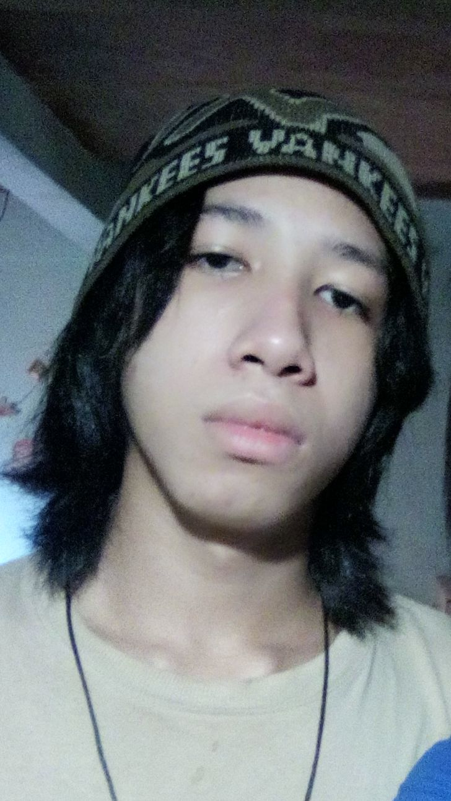

*Mis Colores Favoritos
- Son el amrillo, ya que es muy llamativo y siento que representa gran valor y alegria
- Y el negro, ya que es color del universo, ademas es muy cool y es el color que usamos los rockeros


*Naci el 24 de julio del 2006, tengo 16 años y estudio en Fe y Alegria Maria Inmaculada, cursando 5to de informatica... Soy un chico muy amable y tranquilo

*Por lo general suelo dibujar, hablo y juego con mis hermanos y mama, tambien visito a mi mejor amigo, ademas escucho Rock y juego videojuegos